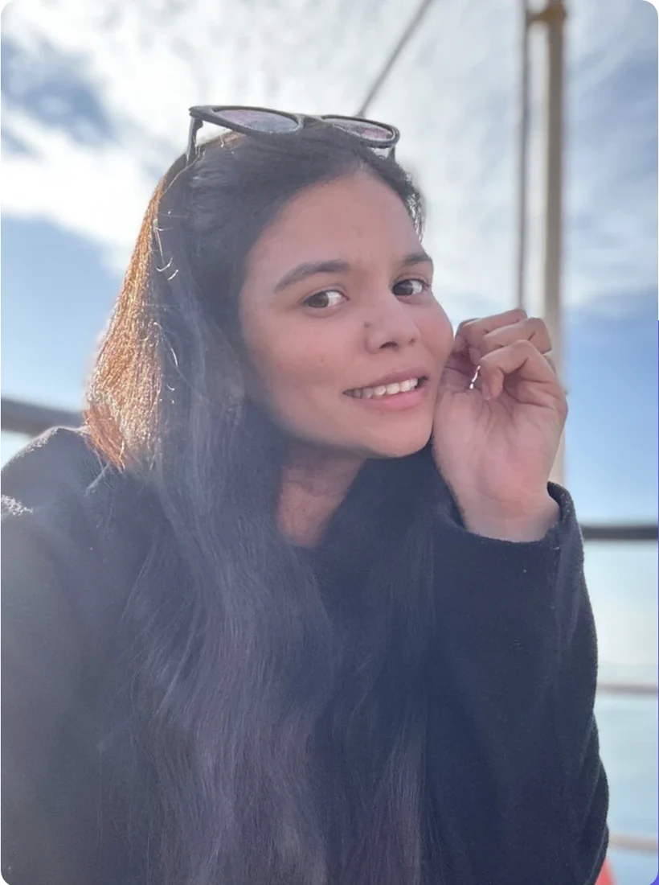
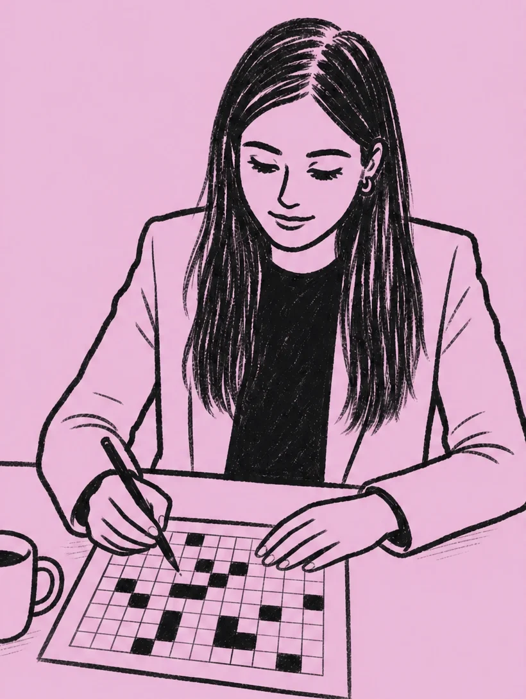
Hello, I am
Ashita Jain
Senior UX designer at JPMorgan Chase · London · 9 years
I turn complex systems into products people can actually use. Research, prototyping and design systems.
I studied Computer Science Engineering, then Communication Design, then Human Computer Interaction at UCL.
How I got here
- 2010 to 2014 Computer Science B.E., Bhilai
- 2015 to 2017 Communication Design M.Des, DAIICT
- 2017 to 2021 ConnectLab.ai MiDigiWorld, founding designer
- 2021 ServiceNow MITRE ATT&CK
- 2021 to 2022 UCL MSc HCI, Dean's List
- 2022 to now JPMorgan Chase Agentic AI onboarding
Design, for me
Design is not about making things beautiful. It is about asking the right questions, making things clearer and shaping what comes next.
I like the problems where nobody agrees on the question yet.
Beauty is not the opposite of function. It is part of it. A screen that looks calm is usually a screen somebody understood.
-
I design to make sense of complexity.
-
I see technology as a tool, not the goal.
-
I am drawn to thoughtful friction.
-
Good design is generous.
Passing it on
Shipping products is great. Helping someone else ship theirs is better.
One to one mentorship through Topmate, for designers starting out and people switching into UX.
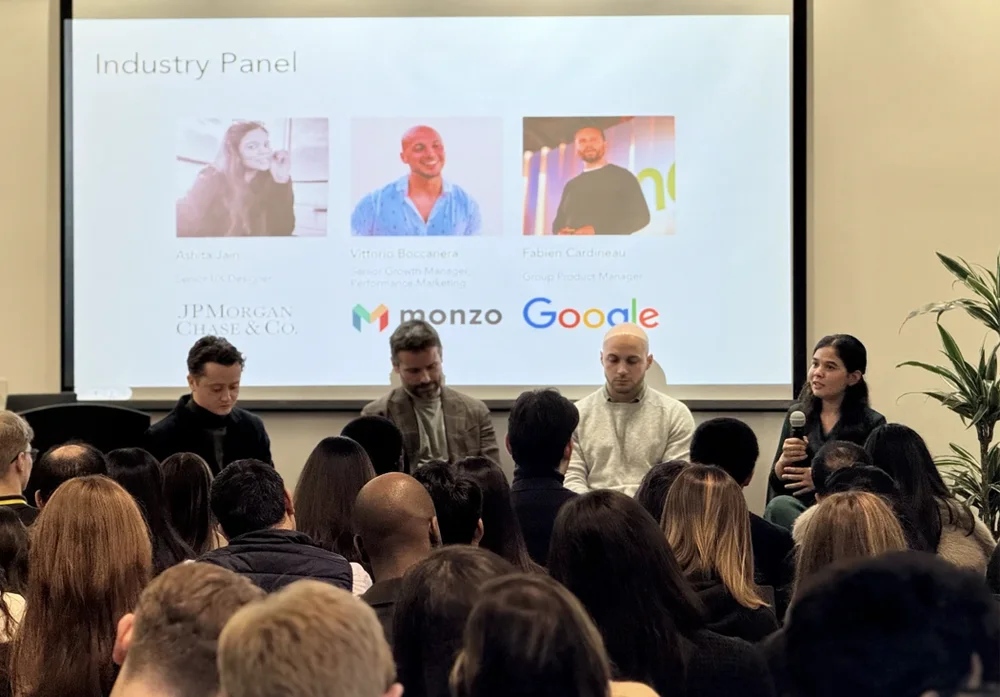
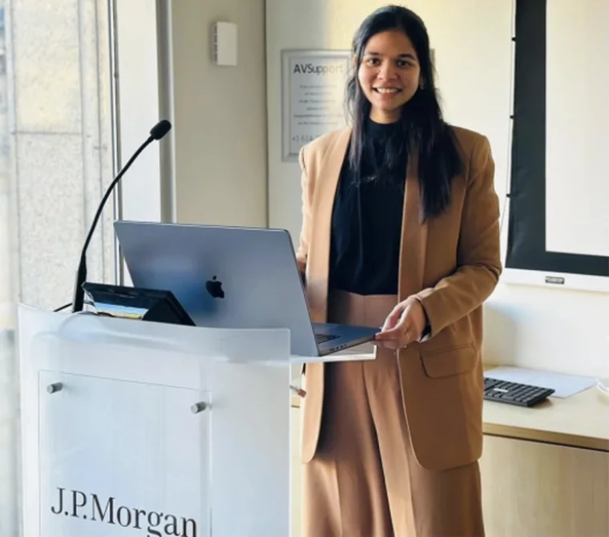
When I am not designing
Running marathons, practicing yoga, reading history, painting, pointing a telescope at the moon.
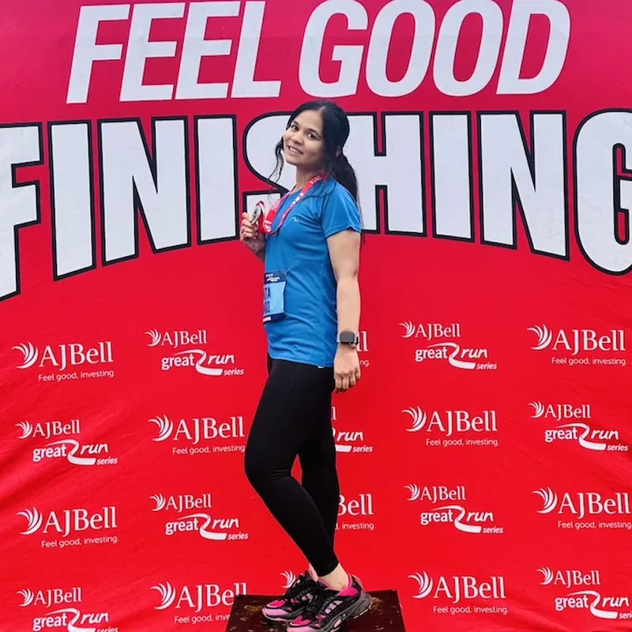
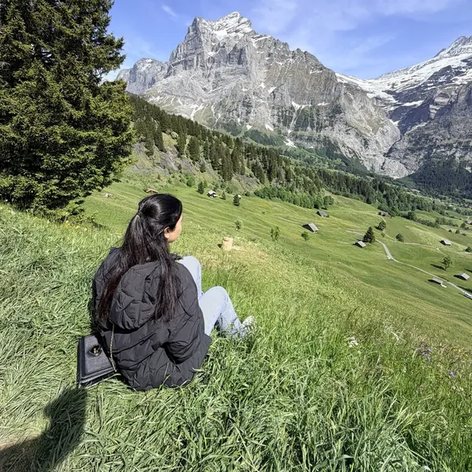
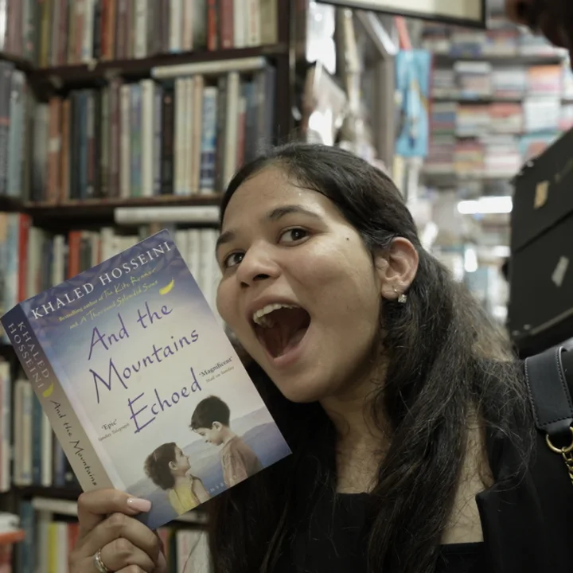
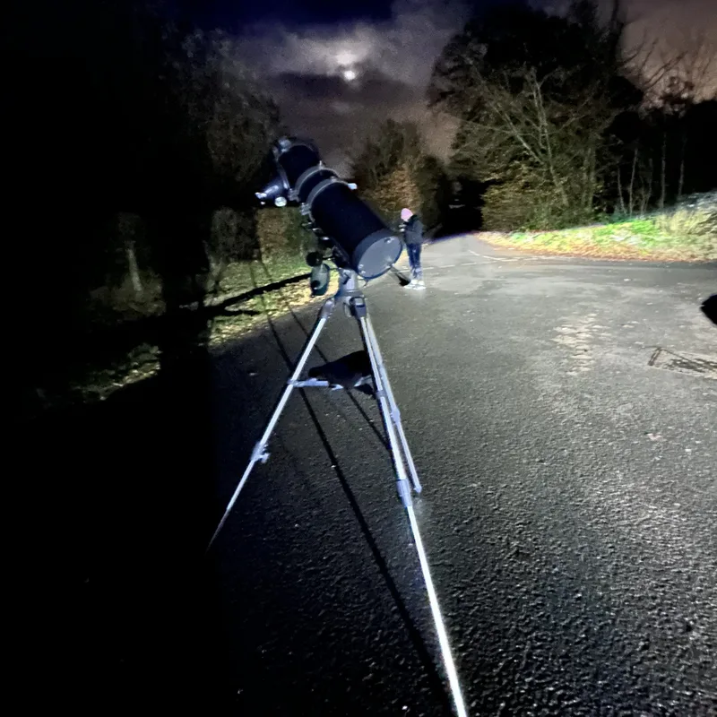
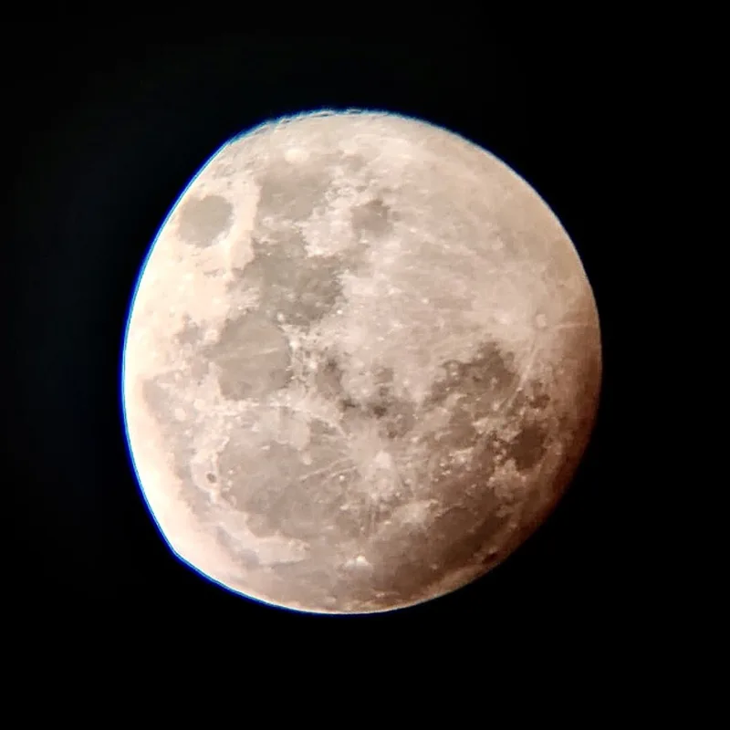
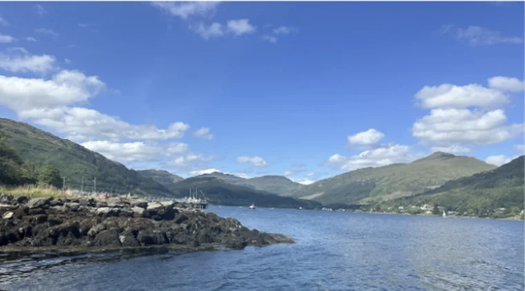
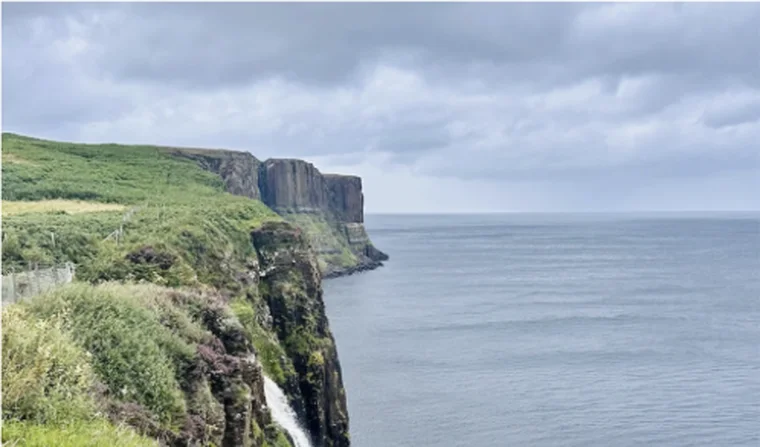